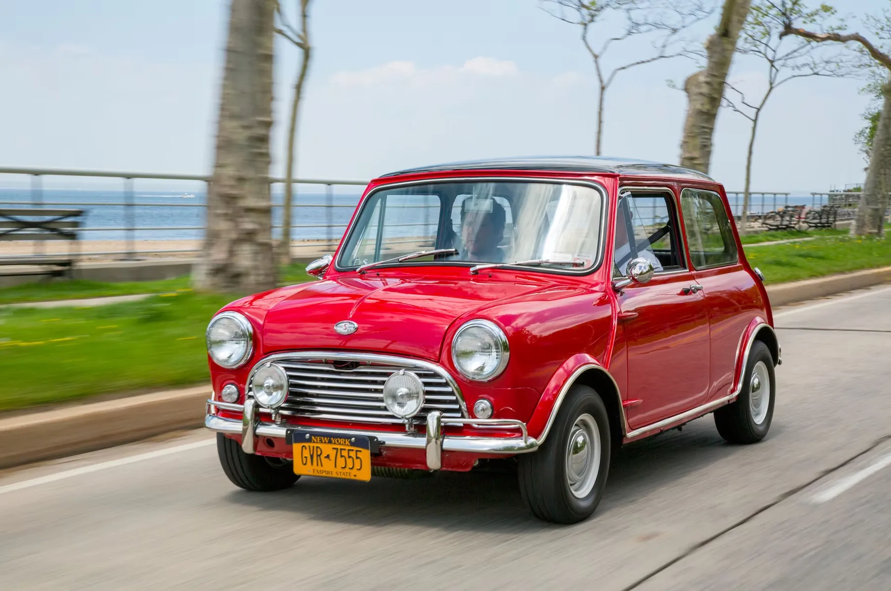
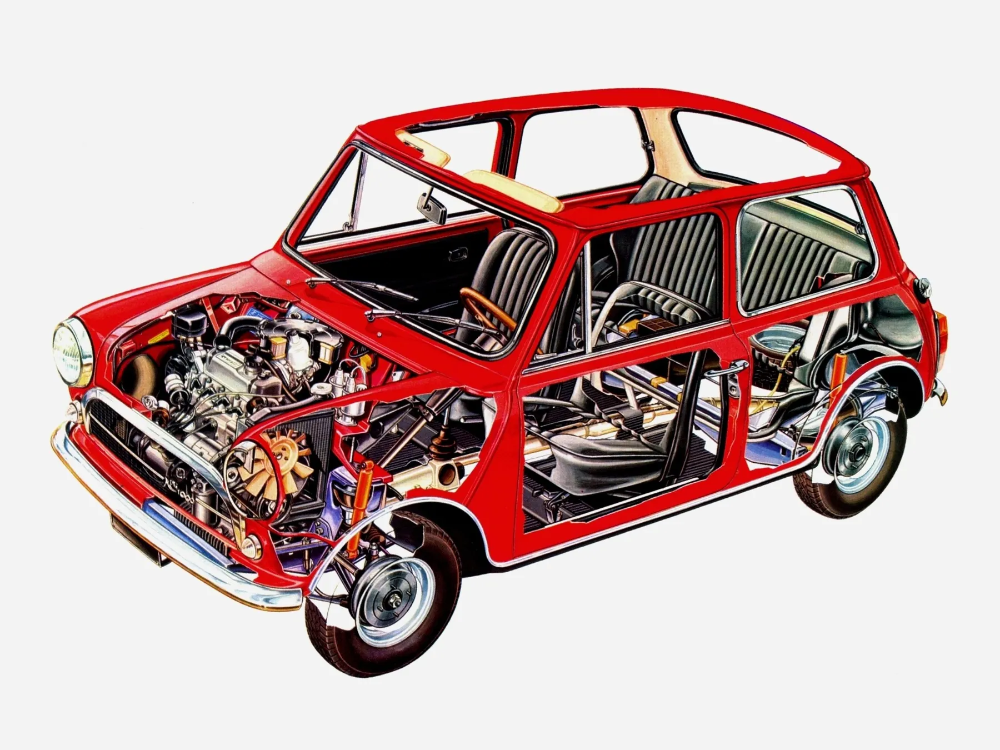
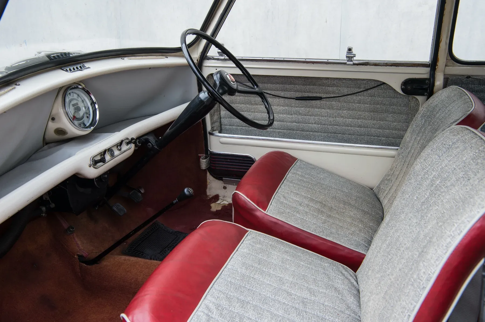
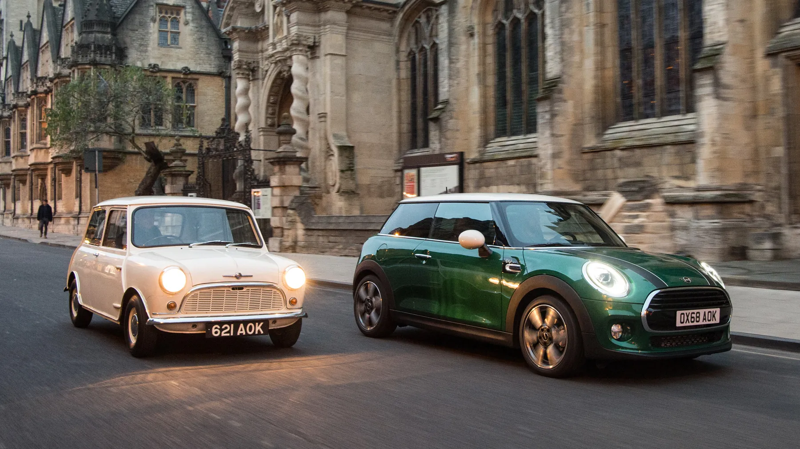

El Mini CooperThe Mini Cooper
El Mini original lo presentó en 1959 la British Motor Corporation (BMC). Lo diseñó sir Alec Issigonis como respuesta a la escasez de combustible de la época. Compacto, asequible y con un aprovechamiento del espacio increíble, el Mini se convirtió enseguida en un símbolo del ingenio británico. Pero fue la colaboración con la leyenda de las carreras John Cooper la que transformó el humilde Mini en un icono de las prestaciones.
The original Mini was introduced in 1959 by the British Motor Corporation (BMC), designed by Sir Alec Issigonis as an answer to the fuel shortages of the time. Compact, affordable, and incredibly space-efficient, the Mini quickly became a symbol of British ingenuity. But it was the collaboration with racing legend John Cooper that transformed the humble Mini into a performance icon.
El nacimiento del Mini CooperThe Birth of the Mini Cooper

A principios de los sesenta, John Cooper vio el potencial del poco peso y la agilidad del Mini para la competición. Con frenos mejorados, un motor preparado y una suspensión más deportiva nacieron el Mini Cooper y el Mini Cooper S: coches pequeños capaces de rendir muy por encima de su tamaño. Estas diminutas máquinas sorprendieron al mundo de las carreras al ganar varias veces el Rally de Montecarlo durante los años sesenta.
In the early 1960s, John Cooper saw the potential of the Mini's light weight and responsive handling for motorsport. With upgraded brakes, a tuned engine, and sportier suspension, the Mini Cooper and Mini Cooper S were born — small cars that could punch far above their weight. These tiny machines shocked the racing world by winning the Monte Carlo Rally multiple times during the 1960s.
Diseño icónico e ingeniería compactaIconic Design and Compact Engineering

La revolucionaria tracción delantera del Mini y su motor transversal permitían aprovechar al máximo el habitáculo en muy poco espacio. Su diseño encantador y cuadrado se volvió reconocible al instante y lo adoraba todo el mundo, desde conductores urbanos hasta estrellas del rock. Las versiones Cooper añadían detalles deportivos como llantas más anchas, doble depósito de combustible y emblemas propios, sin perder la personalidad simpática del coche.
The Mini's revolutionary front-wheel-drive layout and transverse engine allowed for maximum cabin space in a tiny footprint. Its charming, boxy design became instantly recognizable, and it was adored by everyone from city drivers to rock stars. The Cooper versions added sporty details like wider wheels, twin fuel tanks, and distinctive badging, all while keeping the car's friendly personality intact.
Diversión al volanteFun Behind the Wheel

Lo que al Mini Cooper clásico le faltaba en velocidad punta lo compensaba con agilidad y alegría. Con una dirección propia de un kart y un centro de gravedad bajo, ofrecía una conducción divertida y juguetona. Ya fuera trazando curvas cerradas o colándose entre el tráfico, el Mini Cooper transmitía una sensación de diversión y confianza que los coches más grandes no podían igualar.
What the classic Mini Cooper lacked in straight-line speed, it made up for in agility and joy. With go-kart-like steering and a low center of gravity, it delivered an engaging and playful driving experience. Whether navigating tight corners or zipping through traffic, the Mini Cooper brought a sense of fun and confidence that larger cars simply couldn't match.
Un icono culturalEnduring Cultural Icon

El Mini Cooper clásico se convirtió en mucho más que un coche: se convirtió en un icono cultural. Protagonizó películas como The Italian Job, conquistó a aficionados de todo el mundo y se mantuvo en producción (en distintas versiones) durante más de cuatro décadas. Hoy, los Mini Cooper clásicos son muy buscados por los coleccionistas y siguen siendo un símbolo de diseño inteligente, tradición deportiva y puro placer de conducir.
The classic Mini Cooper became much more than just a car — it became a cultural icon. It starred in movies like The Italian Job, captured the hearts of enthusiasts worldwide, and remained in production (in various forms) for over four decades. Today, classic Mini Coopers are highly sought after by collectors and remain a symbol of clever design, motorsport heritage, and pure driving enjoyment.